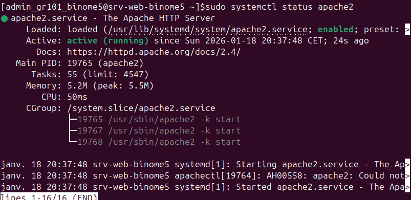
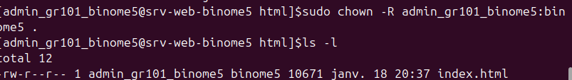
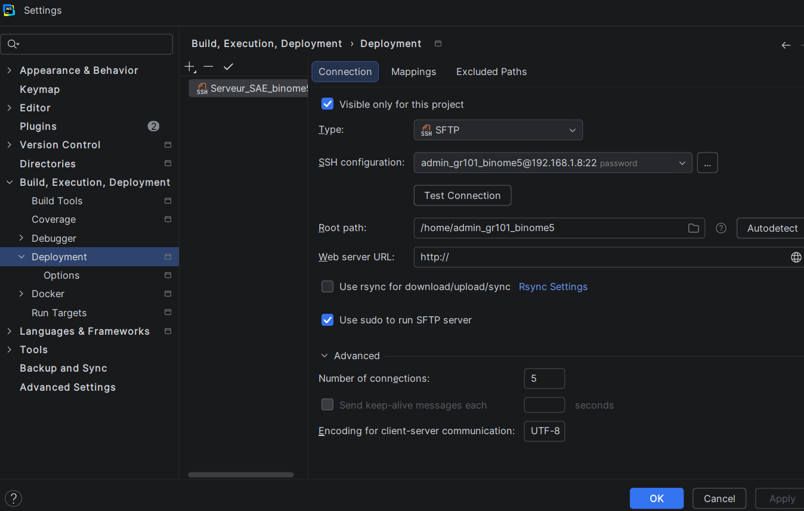
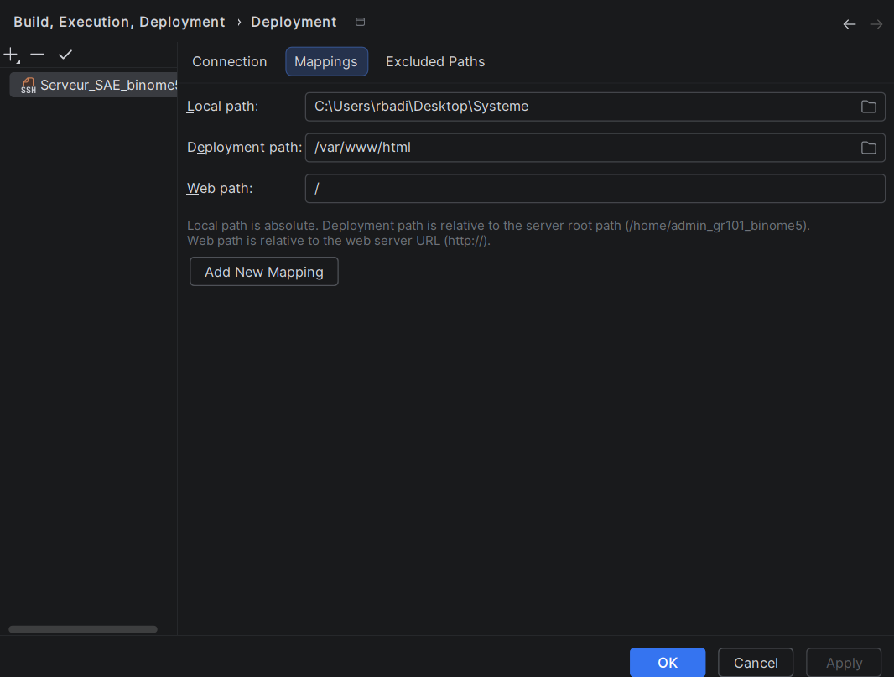

Partie IV : Installation et configuration du serveur Web
L'objectif est de transformer notre VM en un serveur capable d'héberger notre site web sur le réseau local.
1. Installation d'Apache2
sudo apt update
sudo apt install apache2 -y
Nous avons vérifié le statut du service avec sudo systemctl status apache2 et identifié l'IP avec ip a.
2. Tests de fonctionnement


3. Gestion des droits
Pour permettre au groupe binome5 de modifier les fichiers du site :
cd /var/www/html
sudo chown -R admin_gr101_binome5:binome5 .
sudo chmod -R 775 .
4. Déploiement automatisé avec WebStorm
Nous avons configuré une connexion SFTP dans l'IDE WebStorm pour synchroniser automatiquement nos fichiers locaux (Windows) avec le serveur (/var/www/html).
Connexion SFTP
Configuration de l'hôte (IP VM) et de l'authentification SSH.

Mappings de dossiers
Liaison entre le dossier projet local et la racine web du serveur.
